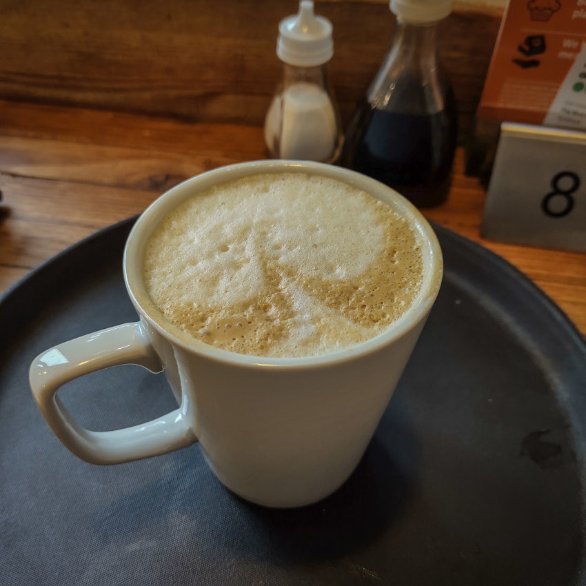
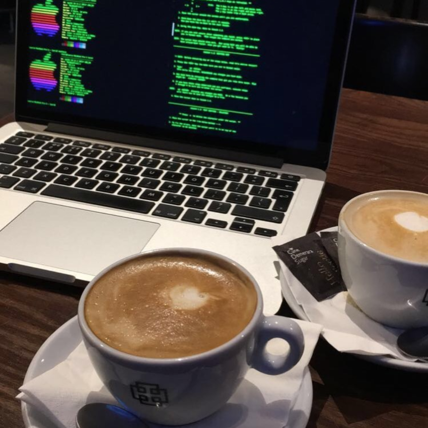
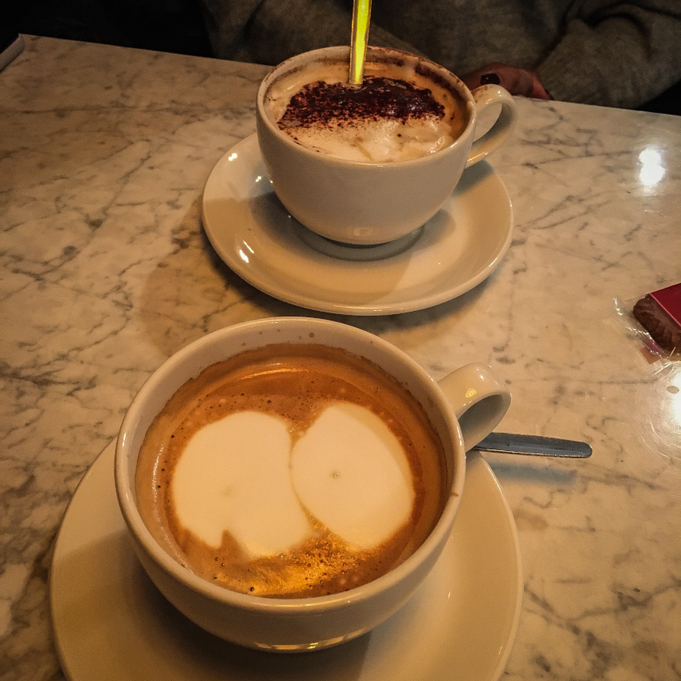

West Highlands
 The Slanj, Tarbet The Slanj, Tarbet |
 The Bothy Bar at Atholl Arms Hotel, Blair Atholl The Bothy Bar at Atholl Arms Hotel, Blair Atholl |
 Bridge of Orchy Hotel, Bridge of Orchy Bridge of Orchy Hotel, Bridge of Orchy |
The Real Food Cafe, Tyndrum |
| Clachaig Inn, Glencoe |  Ben Cruachan Inn, Lochawe Ben Cruachan Inn, Lochawe |
Glasgow City & West
| M&S Café, Argyle Street | iCafe, Merchant City |  iCafe, Merchant City iCafe, Merchant City |
Singl-End, Merchant City |
 Singl-End, Merchant City Singl-End, Merchant City |
 Waterstones Café, Sauchiehall Street Waterstones Café, Sauchiehall Street |
 Pret A Manger, Queen Street Pret A Manger, Queen Street |
Pret A Manger, Queen Street |
 iCafe, Merchant City iCafe, Merchant City |
All Bar One, Glasgow |  iCafe, Merchant City iCafe, Merchant City |
 Caffè Nero, House of Fraser Caffè Nero, House of Fraser |
 M&S Café, Argyle Street M&S Café, Argyle Street |
 John Lewis, Buchanan Galleries John Lewis, Buchanan Galleries |
Glasgow South
 M&S Café, Silverburn M&S Café, Silverburn |
 Real Flat 0/1, Giffnock Real Flat 0/1, Giffnock |
 Ca Va, Giffnock Ca Va, Giffnock |
 Orchard Park, Giffnock Orchard Park, Giffnock |
| Orchard Park, Giffnock | Orchard Park, Giffnock | Waitrose Café, Newton Mearns | Garden Centre, Rouken Glen |
 Cherry Tree, Giffnock Cherry Tree, Giffnock |
 The Boathouse, Rouken Glen The Boathouse, Rouken Glen |
Cherry Tree, Giffnock | Ca Va, Giffnock |
| Ca Va, Giffnock |  Nonna Gina’s, The Avenue Nonna Gina’s, The Avenue |
 Nonna Gina’s, The Avenue Nonna Gina’s, The Avenue |
 M&S, Silverburn M&S, Silverburn |
 M&S, Silverburn M&S, Silverburn |
 Primavera, The Avenue Primavera, The Avenue |
 Primavera, The Avenue Primavera, The Avenue |
 Spill The Beans, Shawlands Spill The Beans, Shawlands |
 Spill The Beans, Shawlands Spill The Beans, Shawlands |
 Spill The Beans, Shawlands Spill The Beans, Shawlands |
 Spill The Beans, Shawlands Spill The Beans, Shawlands |
West Coast Lowlands
 The Marine Hotel, Troon |
England
| Booths, Penrith | Arighi Bianchi, Macclesfield |  Legh Arms, Prestbury Legh Arms, Prestbury |
 Booths, Knutsford Booths, Knutsford |
 Pitit Delice, Wilmslow Pitit Delice, Wilmslow |
Booths, Hale |